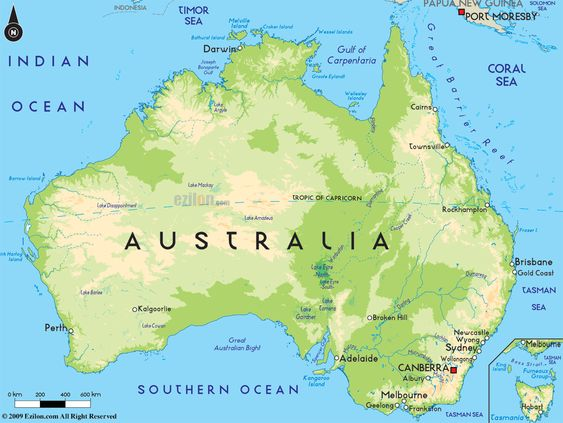
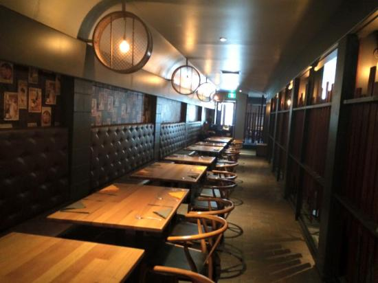
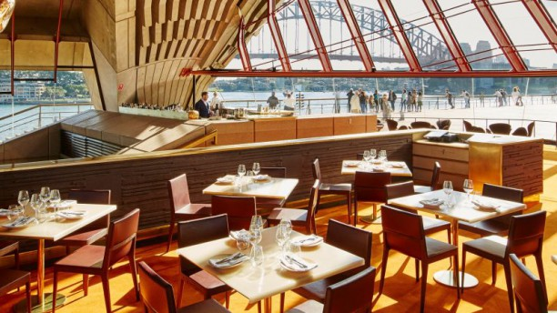
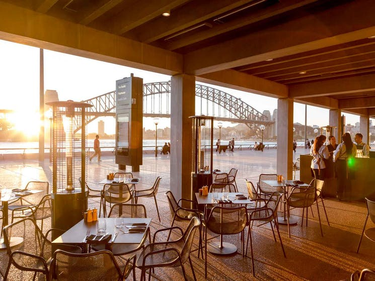
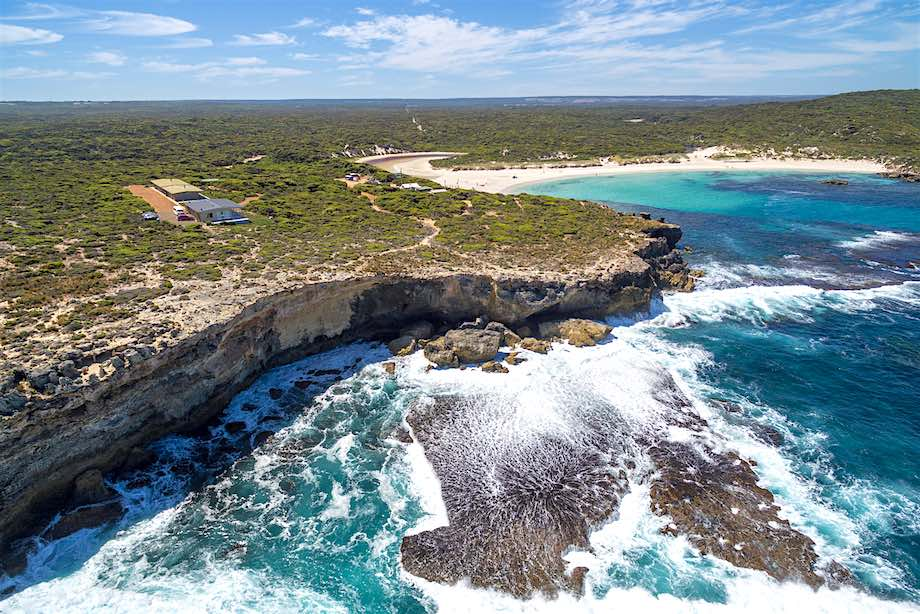
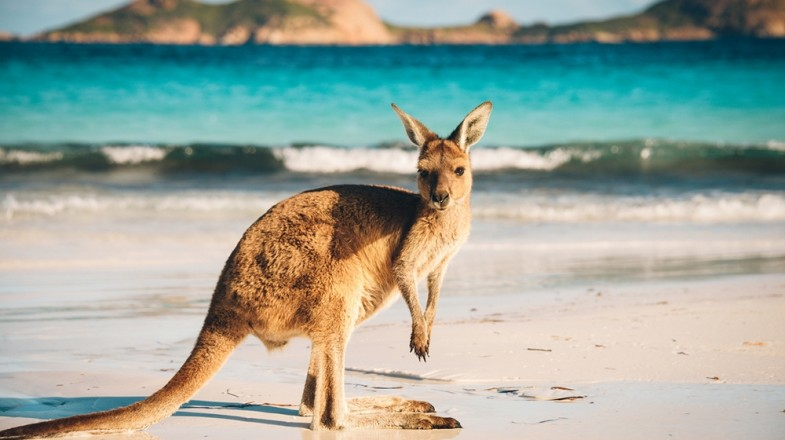
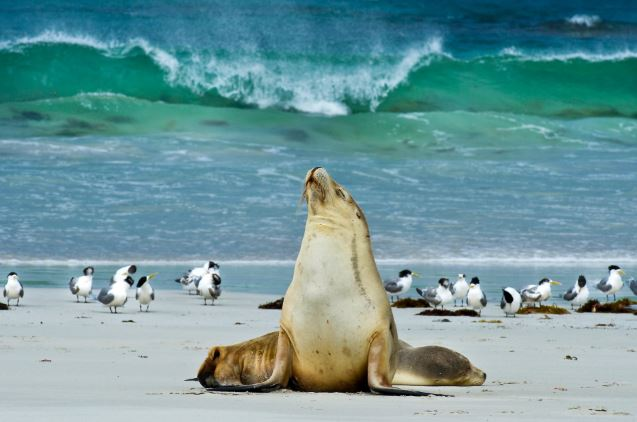

AUSTRALIA
Australia is a land of dreams. From the sacred legends of the aboriginal Dreamtime, when the great spirits conjured the coral reefs, rainforests, and scorched red deserts, to armchair travelers who describe Australia as their dream destination, the Land Down Under deserves all the hype. The world's smallest continent and largest island, Australia is almost the same size as the United States but with a population the size of New York State and some of the quirkiest wildlife on the planet.
Australia is also a land of staggering contrasts and spectacular beauty. Along the coast, you can explore vibrant multicultural cities, vast sand islands, ancient rainforests, and one of the planet's most awe-inspiring natural wonders - the Great Barrier Reef. In the Outback, rugged national parks and red-earthed deserts offer the ultimate in adventure travel.
The tourist places that i will got to in Australia is:
My travel Companion in Australia
The tourist places that i will got to in Australia is:
Great Barrier Reef Marine Park
History:
The Great Barrier Reef Marine Park protects a large part of Australia's Great Barrier Reef from damaging activities. It is a vast multiple-use Marine Park which supports a wide range of uses, including commercial marine tourism, fishing, ports and shipping, recreation, scientific research and Indigenous traditional use. Fishing and the removal of artefacts or wildlife (fish, coral, seashells, etc.) is strictly regulated, and commercial shipping traffic must stick to certain specific defined shipping routes that avoid the most sensitive areas of the park.

The Great Barrier Reef is the largest and best known coral reef ecosystem in the world. Its reefs, almost 3000 in total, represent about 10 per cent of all the coral reef areas in the world. It supports an amazing variety of biodiversity, providing a home to thousands of coral and other invertebrate species, bony fish, sharks, rays, marine mammals, marine turtles, sea snakes, as well as algae and other marine plants

Restaurants:
Beach Club Restaurant:

What you’ll love about Beach Club Restaurant:Spectacular beachfront location, with stunning views out over the Beach Club pool and Catseye Beach. The relaxed and stylish lounge which is the perfect setting to enjoy a pre-dinner drink by the sea. World-class a la carte and tasting menus, available every day of the week.Spectacular wine list, showcasing premium Australian wines, as well as a selection of champagne - for a special occasion. see more.
Dundee's at the Cairns Aquarium:

What you’ll love about Dundee's at the Cairns Aquarium:This restaurant offers a contemporary and innovative dining choice for a special place to eat in our tropical city destination.Our exquisite restaurant features the largest tank within a restaurant in Australia: a stunning 70,000 litre saltwater marine aquarium. Providing a mesmerising encounter with coastal aquatic life, it sets the backdrop for a truly unique dining experience.Complimenting the incredible sea life behind the glass is our delicious food & wine served up by Executive Chef James Wort. With nothing but the finest seafood and produce from Tropical North Queensland and a vibrant drinks menu to match, both casual and fine dining are something to behold at Dundee’s. see more.
Fusion128:
What you’ll love about Fusion128:The funky fit out makes for a smart casual feel with exposed brick walls met by chocolate brown hues, together emanating warmth for a welcoming atmosphere. A menu of popular Modern Australian dishes are given a twist by incorporating native bush herbs and taking culinary influence from Asian and French techniques. While unwinding over refreshing drinks, perhaps start with an entrée of turkish bread or some tasty seared scallops before satisfying your appetite with twice cooked pork belly or crispy skin Salmon. Those with room to spare may like to indulge in a creme brulee and chocolates tasting plate. After finishing, something magical may happen... but that is for you to find out. So come visit us for a dining experience you will never forget. see more.
Sydney Opera House
History:

“It stands by itself as one of the indisputable masterpieces of human creativity, not only in the 20th century but in the history of humankind.” Expert evaluation report to the UNESCO World Heritage Committee, 2007.
Fusing ancient and modernist influences, and built on a site sacred to the local Gadigal people for thousands of years, the sculptural elegance of the Sydney Opera House has made it one of the most recognisable buildings of the twentieth century, synonymous with inspiration and imagination.As Pritzker Prize judge Frank Gehry said when awarding architecture’s highest award to the Opera House’s architect in 2003: “[Jørn] Utzon made a building well ahead of its time, far ahead of available technology... a building that changed the image of an entire country.”Built to “help mould a better and more enlightened community,” in the words of New South Wales Premier Joseph Cahill in 1954, the Sydney Opera House has been home to many of the world’s greatest artists and performances, and a meeting place for matters of local and international significance since opening in 1973.
But while the tale of the Opera House is one of breathtaking triumph, it is also one of personal cost. The building’s design was inspired - entirely unlike anything that had been seen before. Pressures piled upon its architect, Jørn Utzon, who left Australia midway through construction, never to return to see the building completed.Nevertheless, Utzon’s masterpiece would define his career, and redefine the image of Australia both to itself and the world. An exercise in nation building, as Joe Cahill underlined, it was an extraordinary collective act of dreaming in public; a work of art built for the performance of works of art and brought to life by people who believed in the power of imagination.Realising the dream took us all - visionaries and pragmatists, politicians and architects, engineers, artists and, most fundamentally, the people of Australia.
Restaurants:
Bennelong:
What you’ll love about Bennelong:To quote The New York Times, “Bennelong may be the Holy Grail of Australian restaurants.” Named for the Aboriginal interlocutor who had his hut on this historic spot, a place for feasting and celebration for thousands of years, Fink Group's Bennelong restaurant is housed in the first pavilion that greets visitors. With its spectacular, cathedral-like interior, the Bennelong pavilion is known as the Opera House in miniature, while the menu created by a team headed by one of Australia's most celebrated chefs, Peter Gilmore, is - as one critic put it - “Australia on a plate.”. see more.
Portside:
What you’ll love about Portside:The restaurant offers an à la carte menu of casual dining. Indulge in braised beef cheek served with celeriac cream, crispy onions, bitter chocolate jus, and delight in our coconut & lychee trifle with lime leaf, ginger ice cream and freeze-dried fruit crumble. Or, just pop in for a coffee and treat. see more.
Opera Kitchen:

What you’ll love about Opera Kitchen:Perched beside the most famous sails in the world with uninterrupted views of the famed Harbour Bridge, Opera Kitchen provides innovative and creative food for all tastes and wallets.Select from more than 60 dishes from our fragrantly delicious Asian kitchen, including the ocean-fresh poke bowls, or tasty sandwiches and our juicy Opera Kitchen burgers, sliders and hotdogs. Wash it down with your choice of drinks and soak in some of Sydney’s best views. see more.
Kangaroo Island
History:
Kangaroo Island is famous as a feral-free haven where native animals flourish. But if visitors are surprised at how easy it is to see marsupials, they're more astonished by the scale and diversity of the place. Kangaroo Island is 155 kilometres from east to west, a place of lagoons, white-sand beaches and sea cliffs pounded by thunderous swells. It's populated by just 5000 people and is home to a remarkably strong food culture as well as one of the world's most highly regarded luxury lodges. Perhaps most importantly, it also offers that quintessential island experience – a sense that time has slowed and the rest of the world is somewhere else.
Wildlife enthusiasts can lose themselves for weeks on the island, but most visitors confine themselves to five must-see animals. Australian sea lions take refuge in the stunning sands of Seal Bay, the place where you can do guided ranger walks among this threatened species. Koalas hang out at the entrance to Flinders Chase National Park, the vast forested refuge that covers a full third of the island. Endemic island kangaroos can be seen at dusk and dawn across the island's rolling farmland (a landscape as lovely as any). Within the island's labyrinth of quiet dirt roads, echidnas can be spotted on the verges. And don't miss the nightly 5pm feeding time of pelicans at the small capital, Kingscote, one of the most joyous affairs on the island.
Restaurants:
The Java Hut:

What you’ll love about The Java Hut:The Java Hut never fails to impress! Every visit is amazing, quality food at very reasonable price. Eggs Benedict YUM! Big breakfast...OMG!!!! Pancakes....delicious!Drinks...perfect! Service, great! Thank you for a fantastic local feed!!! Highly recommend! see more.
Harvest Kitchen:

What you’ll love about Harvest Kitchen:With a large outdoor dining deck, paved patio and grass lawn areas, Harvest Kitchen provides couples, groups and families with a range of options to suit their needs and a space to enjoy some of the best of what this region has to offer in food, produce, wine and landscape. see more.
Appellation:

What you’ll love about Appellation:The place is in a beautiful location overlooking the vineyards, we had a few drinks on the terrace to enjoy the sunset, a lovely way to start. Dinner was excellent, all dishes with artistic presentation and delicious dishes. The staff were friendly and professional, the dining room had elegance and art on the walls. A refined dining experience. You can not lose it ! see more.